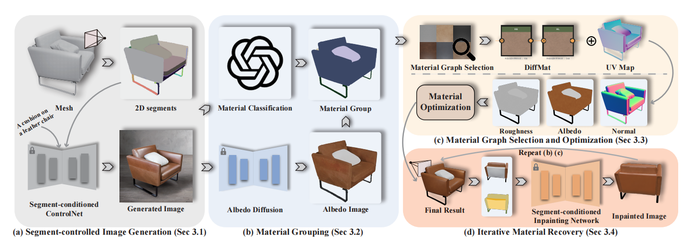

We propose MaPa, a novel approach for generating materials for 3D meshes from textual descriptions. We introduce a method to create segment-wise procedural material graphs as the appearance representation, which supports high-quality rendering and provides significant flexibility in editing. Leveraging a pre-trained 2D diffusion model, our method bridges the gap between text descriptions and material graphs without relying on extensive paired data, i.e., 3D meshes with material graphs and corresponding text descriptions. Specifically, our approach decomposes a shape into a set of segments and designs a segment-controlled diffusion model to synthesize 2D images that are aligned with mesh parts. Based on these generated images, we initialize parameters of material graphs and fine-tune them through the differentiable rendering module to produce materials that conform to the textual description. Extensive experiments demonstrate our framework's superior performance in photorealism, resolution, and editability over existing.

Our pipeline integrates a four-step process to generate and optimize material representations for 3D meshes. Initially, we decompose the mesh into distinct segments and project them onto 2D images using a segment-controlled image generation technique, specifically employing ControlNet. Subsequently, we classify these segments into groups based on similar material properties and appearance. Each material group then undergoes a selection process where we identify and optimize a suitable material graph to represent its texture and characteristics accurately. Lastly, the process is iterative: we continuously render and refine these material graphs across multiple views, filling in any gaps in the visual data, and repeating the grouping and optimization phases until each segment of the mesh is accurately represented by a corresponding material graph. This comprehensive approach ensures detailed and realistic material textures tailored to the unique features of each segment of the 3D mesh.
Object Editing — We perform text-driven editing on generated material through the GPT-4 and a set of predifined APIs.
Texture Prompt — "Original Image"
We would like to thank Xiangyu Su for his valuable contributions to our discussions. This work was partially supported by Ant Group and Information Technology Center and State Key Lab of CAD&CG, Zhejiang University, as well as NSFC (No. 62172364 and No. 62322207). Please contact the person with the underlined name if you have any discussion about this project. The webpage template is borrowed from https://signerf.jdihlmann.com/